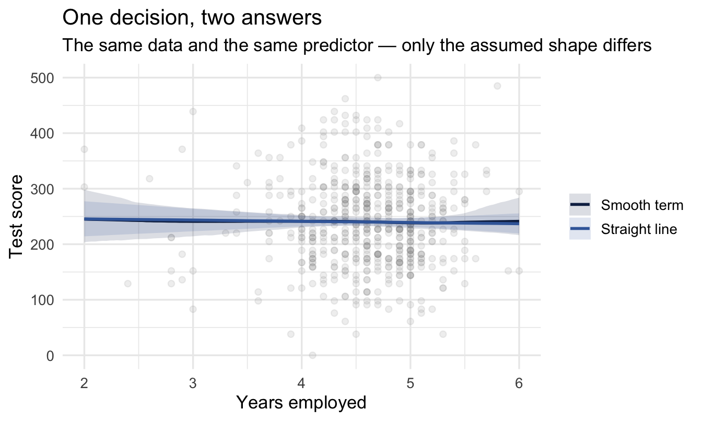
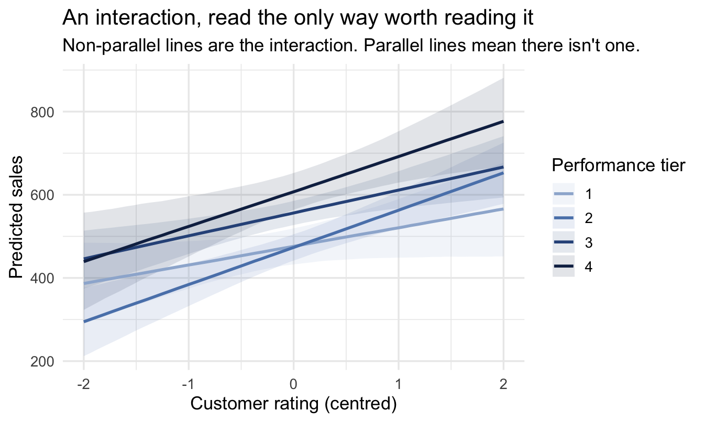

library(tidyverse)
library(peopleanalyticsdata)
library(brms)
library(tidybayes)
theme_set(theme_minimal(base_size = 13))
set.seed(13)
data("managers", package = "peopleanalyticsdata")
data("salespeople", package = "peopleanalyticsdata")
managers <- managers |> drop_na(test_score, yrs_employed, city)
salespeople <- salespeople |>
drop_na(sales, customer_rate, performance) |>
mutate(
performance_f = factor(performance),
customer_rate_c = customer_rate - mean(customer_rate)
)13 Model Building as Craft: The Decisions Software Won’t Make For You
Optional deep-dive
Every model in this book has involved decisions the software never asked about. brm() does not warn you that a variable cannot be changed by anybody in your organisation. It does not ask whether a straight line is the right shape. It does not check whether two of your predictors are measuring nearly the same thing, and it certainly never asks what you intend to do with the answer.
None of these produce an error. All of them change what the model means.
This chapter is about that set of choices. It is the least mechanical chapter in the book, and the one where the difference between an analysis that gets used and one that gets filed is usually decided.
Important
The core idea in one sentence: the hardest decisions in modelling have no defaults, and the software will let you get every one of them wrong without complaint.
What you’ll be able to do by the end
- Sort your variables into things that can be changed, things that cannot, and the awkward middle — and know what each is allowed to do in a model
- Find the manipulable version of a question about something you cannot manipulate
- Recognise when a straight line is the wrong shape, and fit a bendy one
- Fit and read an interaction without falling into the trap that comes with it
- Handle predictors that move together, and know why this is a conversation about priors rather than a diagnostic test
- Decide, before you run anything, what you would do differently depending on the answer
13.1 Setup
13.2 Part 1 — Can this variable be a treatment?
13.2.1 A question worth asking before any of the others
Here is a model a People Analytics team might genuinely fit:
attrition ~ age + gender + tenure + engagement + manager_rating + pay
It looks reasonable. Every variable is plausibly related to leaving. It will run, produce coefficients, and fill a slide.
Now ask a different question of each one: could the organisation change this for a specific person, if it decided to?
- Age. No.
- Gender. No.
- Tenure. No — you cannot grant somebody two more years of service.
- Engagement. Not directly. You can change things that might change it.
- Manager rating. Sort of, and mostly by changing the manager.
- Pay. In principle yes. In practice, we will come back to this.
Most of that model consists of things nobody can do anything about.
13.2.2 “No causation without manipulation”
The idea has a name and a lineage. It comes from Donald Rubin’s framework for causal inference and was put most sharply by Paul Holland in 1986: no causation without manipulation.
The argument runs like this. A causal effect is a comparison between what happened and what would have happened under a different treatment. That comparison only means something if the different treatment is a coherent thing to imagine. What would this person’s attrition risk have been if they had been 30 instead of 45? You cannot answer, because there is no version of that person who is 30 and otherwise identical — their whole history would be different.
Important
A coefficient on a variable nobody can change is a description, not a lever.
That is not the same as saying it is useless. It is saying it cannot answer the question “what should we do?”, and that in People Analytics this is nearly always the question being asked.
13.2.3 Three tiers, and the middle one is where recommendations die
The binary of manipulable and immutable is too clean for organisational life. There are three tiers, and the interesting one is in the middle.
Immutable. Age, gender, ethnicity, nationality, tenure, most personality measures. Nothing the organisation does changes them for an individual. These can be controls — Chapter 21 is about when adjusting for them is right and when it is a trap — but no recommendation can ever be attached to them.
Genuinely manipulable. Training assignment, coaching, workload, shift pattern, whether somebody’s role is advertised internally, which manager they report to. These can be treatments. They are also, notably, the variables least likely to be sitting in an HRIS extract.
Manipulable in principle, locked in practice. This is the tier the textbooks skip and organisations live in.
Important
Pay is the clearest example. In principle you can pay any individual anything. In practice you cannot move one person’s band without moving the band, and you cannot move one band without shifting every band around it — because the differentials between grades are what make progression mean anything.
So a model that says “a 5% pay rise reduces attrition risk by X” is answering a question nobody can act on at the individual level. The actionable version is a different, harder question about the structure: what happens if we move the whole band, and what does that do to the grades either side?
Other members of this tier: job level, location (you can relocate a role, at a cost that dwarfs the effect you measured), team size, span of control, contract type. All appear routinely in PA models. All are far less adjustable than a regression coefficient implies.
13.2.4 The resolution: find the manipulable version
Read strictly, Holland’s dictum says you cannot study whether gender affects promotion. That conclusion is both wrong and useless, and the way out is instructive.
You cannot manipulate somebody’s gender. You can manipulate the gender a decision-maker perceives — which is what audit studies do when they send matched CVs with different names to real vacancies. The underlying attribute is fixed; the signal reaching the decision is not, and the signal is what the decision responds to.
The same swap works on most questions of this kind:
| Instead of asking | Ask |
|---|---|
| Does age affect promotion? | Does the age visible on the application affect shortlisting? |
| Does tenure cause disengagement? | Does what we do differently for long-tenured staff cause it? |
| Does personality predict performance? | Does the personality assessment change who we hire, and does that change performance? |
Each right-hand version names something a person or a process actually does. Each is answerable. Each produces a recommendation.
NoteA different lens: this is where the traditions genuinely disagree
Holland’s rule is not universally accepted, and it is worth knowing that the argument exists rather than being told it is settled.
The potential-outcomes tradition — Rubin, Holland, and much of applied economics — treats manipulability as a requirement: without a coherent intervention, the counterfactual is undefined and so is the effect.
The graphical tradition — Judea Pearl and the DAG machinery of Chapter 21 — disagrees. It defines a causal effect from the structure of the graph, and is content to talk about the effect of a variable nobody could assign.
This section takes the stricter line for a practical reason rather than a philosophical one. In People Analytics the answer is usually meant to support a decision, so a framework that keeps asking “and what would you do?” is a useful discipline — even though, taken as a general account of what causes what, it rules out questions that can sensibly be asked.
WarningWhen you can skip this
Skip it when you are forecasting. A headcount or attrition forecast does not need any variable to be manipulable. Age is a perfectly good predictor of retirement. Nobody is proposing to intervene on it.
Skip it when the immutable variable is a control. Chapter 21’s adjustment sets are full of things nobody can change, and that is exactly right — you are removing their influence, not recommending anything about them.
Don’t skip it when a recommendation is attached. The moment somebody says “so we should…”, every variable in that sentence needs to be one your organisation can actually move. This is a common way a technically sound analysis produces an unusable answer.
13.3 Part 2 — What shape should it take?
13.3.1 The straight line was a decision
Chapter 6 fitted a straight line and never said so. That was the right simplification at the time and it is worth revisiting now, because in People Analytics one of the relationships you will meet most often is not straight.
Tenure and attrition. Risk of leaving is low in the first weeks, rises sharply through the first year to eighteen months, falls away as people settle, and often rises again around long-service milestones. Fit a straight line through that and you get a small average slope that describes nobody, in exactly the way Chapter 12’s varying slopes averaged away regional differences.
13.3.2 Letting the line bend
brms handles this with s() — a smooth term, which fits a flexible curve and uses a penalty to stop it chasing noise:
priors <- c(
prior(normal(200, 100), class = Intercept),
prior(normal(0, 50), class = b),
prior(exponential(0.01), class = sigma)
)
fit_linear <- brm(
test_score ~ yrs_employed,
data = managers, family = gaussian(),
prior = priors,
chains = 4, iter = 2000, seed = 13, refresh = 0
)
fit_smooth <- brm(
1 test_score ~ s(yrs_employed),
data = managers, family = gaussian(),
prior = priors,
chains = 4, iter = 2000, seed = 13, refresh = 0
)- 1
-
The only change.
s()says “let the data choose the shape, within reason” — the penalty term shrinks the curve back towards a straight line unless the data insists otherwise, which is the same partial-pooling instinct as Chapter 8 applied to wiggliness instead of to groups.
Code
grid <- tibble(yrs_employed = seq(min(managers$yrs_employed),
max(managers$yrs_employed),
length.out = 120))
bind_rows(
grid |> add_epred_draws(fit_linear) |> mutate(model = "Straight line"),
grid |> add_epred_draws(fit_smooth) |> mutate(model = "Smooth term")
) |>
group_by(model, yrs_employed) |>
median_qi(.epred, .width = 0.95) |>
ggplot(aes(yrs_employed, .epred, colour = model, fill = model)) +
geom_point(data = managers, aes(yrs_employed, test_score),
inherit.aes = FALSE, alpha = 0.15, colour = "grey60") +
geom_ribbon(aes(ymin = .lower, ymax = .upper), alpha = 0.15, colour = NA) +
geom_line(linewidth = 1) +
scale_colour_manual(values = c("Straight line" = "#3d68a8",
"Smooth term" = "#122a52")) +
scale_fill_manual(values = c("Straight line" = "#3d68a8",
"Smooth term" = "#122a52")) +
labs(title = "One decision, two answers",
subtitle = "The same data and the same predictor — only the assumed shape differs",
x = "Years employed", y = "Test score", colour = NULL, fill = NULL)
Compare the two with LOO, exactly as in Chapter 7, and let the comparison tell you whether the extra flexibility earned its place.
Important
The danger is not that a smooth term is complicated. It is that a straight line is invisible. Nothing in the output of a linear model tells you the relationship bends; you only find out by plotting it, or by fitting the alternative and comparing.
That makes this the one place in the chapter where the default is genuinely risky rather than merely simplifying.
WarningWhen you can skip this
Skip it when the range is narrow. Almost anything is approximately straight over a short enough stretch. If your tenure range is two to four years, a line is fine.
Skip it when you only need direction. “More tenure, higher score” may be all the decision needs, and a straight line answers that.
Don’t skip it when you are predicting at the edges, or when the variable is one of the known-bendy ones — tenure, age, team size, time since promotion. Those bend reliably enough that assuming otherwise is a choice you should make consciously.
13.4 Part 3 — Does the effect depend on something else?
13.4.1 The question behind an interaction
Chapter 12 let a slope vary by group using multilevel structure. An interaction does the same job for a variable you have measured: it lets the effect of one predictor depend on the value of another.
Does customer rating matter more for high performers than for low ones?
fit_int <- brm(
1 sales ~ customer_rate_c * performance_f,
data = salespeople, family = gaussian(),
prior = c(prior(normal(400, 200), class = Intercept),
prior(normal(0, 200), class = b),
prior(exponential(0.005), class = sigma)),
chains = 4, iter = 2000, seed = 13, refresh = 0
)- 1
-
The
*expands to both main effects and their product. Writinga * brather thana + b + a:bis shorthand for exactly the same model.
13.4.2 The trap, and the way round it
Adding an interaction changes what the main effects mean, and this catches people out reliably.
Important
In a model with a * b, the coefficient on a is not the effect of a. It is the effect of a when b is zero.
If b is a factor, “zero” means the reference level. If b is continuous and not centred, “zero” may be a value no employee has — and you are reading the effect of one variable at an impossible value of another.
Which is the real reason this book centres its continuous predictors. In Chapter 6 centring made the intercept interpretable; here it makes the main effects interpretable too, and that matters more.
The reliable way to read an interaction is not to read the coefficients at all. Ask the model for predictions across the range instead:
Code
expand_grid(
customer_rate_c = seq(-2, 2, length.out = 60),
performance_f = levels(salespeople$performance_f)
) |>
add_epred_draws(fit_int) |>
median_qi(.epred, .width = 0.95) |>
ggplot(aes(customer_rate_c, .epred,
colour = performance_f, fill = performance_f)) +
geom_ribbon(aes(ymin = .lower, ymax = .upper), alpha = 0.12, colour = NA) +
geom_line(linewidth = 1) +
scale_colour_manual(values = c("#9db4d4", "#5a83b8", "#2f5389", "#122a52")) +
scale_fill_manual(values = c("#9db4d4", "#5a83b8", "#2f5389", "#122a52")) +
labs(title = "An interaction, read the only way worth reading it",
subtitle = "Non-parallel lines are the interaction. Parallel lines mean there isn't one.",
x = "Customer rating (centred)", y = "Predicted sales",
colour = "Performance tier", fill = "Performance tier")
Non-parallel lines are the interaction. That is the whole interpretation, it needs no coefficient table, and a stakeholder can read it unaided.
WarningWhen you can skip this
Skip it unless you had a reason in advance. Interactions are where fishing expeditions go. With four predictors there are six two-way interactions, and testing all of them until one looks interesting produces exactly the finding you would expect from chance.
Skip it when the groups are small. An interaction estimates a separate slope per group, so it needs enough data in each. A three-way interaction on People Analytics data is almost always more model than the data can support.
Don’t skip it when somebody has asked a “does it work for everyone?” question — which is what “is the programme equitable?” and “should we target this?” both are underneath.
13.5 Part 4 — When predictors move together
13.5.1 Why this is a prior conversation, not a test
Engagement and intent-to-stay. Pay and level. Tenure and age. People Analytics data is full of predictors that carry nearly the same information, and the classical treatment is a diagnostic — compute a variance inflation factor, panic above some threshold, drop a variable.
The Bayesian version is more honest about what is happening. When two predictors move together, the data genuinely cannot distinguish their separate contributions. There is a ridge of nearly-equally-good answers: a large positive coefficient on one and a negative one on the other fits about as well as the reverse.
Important
The model is not broken. It is telling you the truth — this data cannot separate these two things — and it says so honestly, in the width of the posterior and in the correlation between the two coefficients.
A frequentist fit reports the same problem as an unstable point estimate with a large standard error, which is easier to overlook and easier to misread as “not significant”.
The practical consequences follow from that. Wide intervals on both coefficients, strongly correlated draws, and estimates that swing when you add or remove a nearby variable. Notably, prediction is unaffected — the model predicts fine; it just cannot tell you which of the two is responsible.
Three responses, in order of preference:
- Decide you only need one. If pay and level carry the same information and the question is about pay, level may be a control you do not need. Chapter 21’s adjustment sets are how you decide this properly rather than by taste.
- Combine them. If two survey scales measure nearly the same construct, that is Chapter 19’s latent-variable section, not a collinearity problem.
- Use a prior to say what you believe. Genuinely Bayesian, and underused: a tighter prior on one coefficient encodes “I do not believe this has a large independent effect”, and the model will respect that while remaining honest about the uncertainty.
NoteFor the ML/DS crowd
Regularisation is the same move as option 3, arrived at from a different direction. Ridge regression handles correlated predictors by shrinking coefficients towards zero, which stabilises them; the Bayesian version is a Normal prior, and the penalty strength is the prior’s width.
The difference is what you are able to say afterwards. A ridge penalty chosen by cross-validation is a tuning parameter. A prior is a claim about the world that somebody can disagree with — and, per Chapter 23, one you can elicit from a stakeholder rather than choose alone.
13.6 Part 5 — Decide what you’ll do before you look
13.6.1 The question that should come first
This belongs at the end of the chapter and the beginning of every project.
Before running an analysis, answer this: what would I do differently depending on the result? Not “what would I conclude” — what would happen. Which decision changes, who makes it, and what do they do instead.
Write down the answer for each plausible result before you see any of them.
Important
If every answer leads to the same action, do not run the analysis.
You already know what you are going to do. The analysis will not inform the decision; it will decorate it, and everyone involved will spend a fortnight discovering that.
That sounds harsh. It is also the most useful filter I know of for a team with more requests than capacity, and it costs ten minutes.
13.6.2 What it looks like in practice
Take a real request: “does our manager training reduce attrition?”
Before modelling, the decision frame:
| Result | What we would do |
|---|---|
| Large reduction, tight interval | Extend the programme to all managers; budget already identified |
| Small reduction, tight interval | Keep it for new managers only; do not expand |
| Anything, wide interval | Nothing changes; commission a proper evaluation |
| No effect or worse | Stop it and redirect the budget |
Three things fall out of that table, and each is worth more than the model.
It tells you what precision you need. If the difference between “extend” and “keep as-is” is a two-point effect, you need an interval narrow enough to distinguish two points — which is Chapter 22’s design analysis, and now you know what to aim at.
It is the informal version of something with a price on it. Fill in a cost against each row rather than an action, and the table becomes a loss function — at which point the question “is this analysis worth commissioning at all?” has a numerical answer. That is Chapter 24, and this table is the version you can do in a meeting without any of it.
It surfaces the disagreements early. Fill this in with your stakeholder and you will find people who thought they agreed do not. That argument is much cheaper before the analysis than after.
It stops the result being renegotiated. A pre-agreed table makes it noticeably harder for a disappointing answer to be reinterpreted into an encouraging one, which is a thing that happens.
NoteA different lens: this is not a Bayesian idea
Pre-committing to what a result would mean comes from decision analysis and shows up all over: clinical trials pre-register endpoints, and the “decision quality” literature makes it a formal step.
It fits particularly naturally here for two reasons. Chapter 5 already asked you to decide what interval you would report before looking, for the same reason. And a posterior lets you compute “the probability the effect is bigger than two points” directly — so a pre-agreed threshold turns into a number the model produces, rather than an argument about whether a p-value counts.
CautionTry it yourself
Take an analysis request currently on your desk and fill in the table before you touch any data. Four rows: a large effect, a small effect, an uncertain result, no effect. For each, write the action — a specific thing a named person would do differently.
Two outcomes are common and both are useful. Either you discover the analysis is worth doing and you now know how precise it needs to be. Or you discover every row says the same thing, and you have just saved yourself a fortnight.
On the job
ImportantWhy this matters day to day
The five decisions in this chapter have something in common: no software prompts you for any of them, and getting each one wrong produces output that looks entirely normal.
The two that change the most work are the two at the ends. Ask what could actually be changed before deciding what goes in the model, and you stop producing recommendations attached to somebody’s age. Ask what you would do differently before running anything, and you stop running analyses that were never going to change a decision.
The three in the middle — shape, interaction, correlated predictors — are the craft. They are the ones that make an analysis right rather than merely defensible, and they are learned by fitting the alternative and looking, not by memorising rules.
Summary
NoteToday you learned
- A coefficient on something nobody can change is a description, not a lever — and People Analytics models are full of them.
- Variables come in three tiers: immutable, genuinely manipulable, and manipulable in principle but locked in practice — where pay, level and location live.
- When you cannot manipulate the thing, look for the manipulable version of the question, as audit studies do with names on CVs.
- A straight line is a decision, not a default, and it is invisible in the output. Tenure is the relationship most likely to punish it.
- In a model with an interaction, a main effect is the effect at zero of the other variable — so read interactions from predictions, not coefficients. Non-parallel lines are the finding.
- Correlated predictors are the data telling you it cannot separate two things. The Bayesian response is a prior, not a threshold test.
- Before running anything, write down what you would do for each plausible result. If the actions are all the same, the analysis is decoration.
Next chapter
Part V — People Analytics deep dives. From here the chapters stop being about general method and start being about specific problems: rates you have too little data for, ranking managers fairly, pay variance, time-to-event, survey scales, measurement, experiments and causal structure. Each is a place where the judgement in this chapter meets a question somebody has actually asked you.